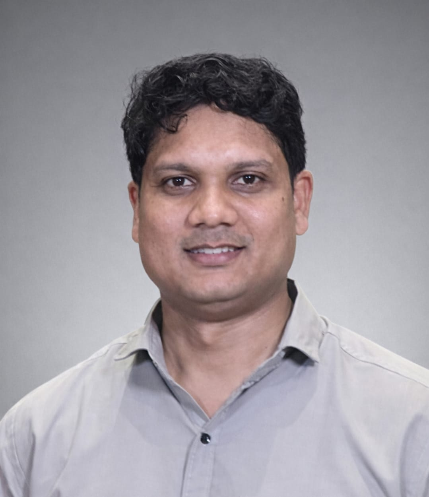

Dr. Anil Kumar
Computational Geophysics · Scientific Machine Learning · AI for Earth & Environmental Systems
Assistant Professor (Grade-I)
Department of Applied Geophysics
Indian Institute of Technology
(Indian School of Mines) Dhanbad
Jharkhand – 826004, India
Lead, PURAM Lab
Physics-based Unified Research in Advanced Modeling
IIT (ISM) Dhanbad
Office: Room 505, New Academic Complex
Email:
anilkumar@iitism.ac.in
GitHub
·
Google Scholar
·
LinkedIn
CV (PDF)

Research Bio
I am an Assistant Professor in the Department of Applied Geophysics at IIT (ISM) Dhanbad, where I lead the PURAM Lab (Physics-based Unified Research in Advanced Modeling). My research lies at the intersection of computational geophysics, numerical modeling, inverse problems, and artificial intelligence. I am particularly interested in developing computational methods that combine physical models with modern machine learning to improve the interpretation, prediction, and characterization of complex Earth and environmental systems.
My work spans geophysical inversion, reduced-order modeling, scientific machine learning, hydrodynamic simulation, hydrogeophysics, and geospatial artificial intelligence. A recurring theme of my research is the development of physics-aware surrogate and AI models that retain the interpretability of governing physical equations while substantially reducing computational cost.
I received my Ph.D. in Computational Geophysics through the IITB–Monash Research Academy, a joint doctoral program between the Indian Institute of Technology Bombay and Monash University, Australia. Before joining IIT (ISM), I worked at IIT Delhi on high-performance hydrologic and hydrodynamic modeling, AI-assisted flood forecasting, and reduced-order modeling.
Research Interests
- Geophysical inversion and uncertainty quantification — deterministic, Bayesian, object-based, and probabilistic inversion.
- Scientific machine learning — physics-informed learning, neural operators, surrogate models, and differentiable numerical models.
- Computational geophysics — large-scale numerical simulation of electrical, electromagnetic, hydrological, and coupled subsurface processes.
- Reduced-order modeling — POD-based models, latent representations, operator learning, and computational acceleration of PDE systems.
- Hydrogeophysics and environmental geophysics — near-surface characterization, groundwater, soil properties, flooding, and coupled environmental processes.
- AI for Earth systems — deep learning, geospatial AI, remote sensing, and digital-twin frameworks for environmental prediction.
- High-performance scientific computing — GPU-enabled simulation, scalable PDE solvers, and high-resolution Earth-system modeling.
Current Research
Geophysical Inversion & Subsurface Imaging
Development of physics-informed and learning-assisted approaches for electrical and near-surface geophysical inversion, with particular interest in reducing non-uniqueness through informative parameterizations, learned configuration–response spaces, and probabilistic inference.
Scientific Machine Learning for PDE Systems
Development of neural operators, reduced-order models, differentiable forward models, and physics-guided learning frameworks for computationally demanding geophysical and environmental systems.
Urban Flood Forecasting & Environmental Digital Twins
Development of high-resolution hydrologic–hydrodynamic modeling and AI systems for rapid urban inundation prediction using numerical simulations, remote sensing, and deep-learning-based surrogate models.
GeoAI & 3-D Environmental Mapping
Application of deep learning, foundation models, LiDAR, remote sensing, and point-cloud analysis for extracting and reconstructing urban and natural features relevant to environmental modeling and risk assessment.
Education
Ph.D. in Computational Geophysics
IITB–Monash Research Academy
Indian Institute of Technology Bombay & Monash University,
Australia
2016–2022
Thesis:
Statistical and Machine Learning Models for the Evaluation of
Geophysical and Geomechanical Data
M.Tech. in Petroleum Geosciences
Indian Institute of Technology Bombay
2013–2015
Integrated M.Tech. in Geophysical Technology
Indian Institute of Technology Roorkee
2008–2013
Academic & Research Experience
-
Assistant Professor (Grade-I)
Department of Applied Geophysics, IIT (ISM) Dhanbad
May 2026 – Present -
Principal Project Scientist
Department of Civil Engineering, Indian Institute of Technology Delhi
Aug 2023 – Apr 2026 -
Senior Project Scientist
Indian Institute of Technology Delhi
Dec 2022 – Jul 2023 -
Junior Research Fellow
Indian Institute of Technology Bombay
Aug 2015 – Apr 2016
Selected Publications
- Kumar, A., Saharia, M., Kirstetter, P. (2024). Mapping a novel metric for flash flood recovery using interpretable machine learning. Journal of Hydrometeorology. doi: 10.1175/JHM-D-23-0196.1
- Hu, R., Kumar, A., Yellishetty, M., Walsh, S.D.C. (2024). A bootstrap strategy to train, validate and test reduced-order models of coupled geomechanical processes. Computers and Geotechnics, 167, 106094. doi: 10.1016/j.compgeo.2024.106094
- Kumar, A., Hu, R., Walsh, S.D.C. (2021). Development of reduced order hydro-mechanical models of fractured media. Rock Mechanics and Rock Engineering, 55, 235–251. doi: 10.1007/s00603-021-02668-9
For the complete and most recent publication list, see my Google Scholar profile or full CV .
Textbook
Python for Water and Environment
Anil Kumar and Manabendra Saharia
Springer Nature, 2024.
A computational introduction to Python for students, researchers, hydrologists, geoscientists, and environmental professionals, with applications to water and environmental data analysis.
Teaching
At IIT (ISM), my teaching interests span computational geophysics, near-surface geophysics, inverse theory, artificial intelligence, remote sensing, and geophysical data science.
- Introduction to Near Surface Geophysics — electrical, electromagnetic, seismic, gravity, magnetic, and environmental applications.
- Applied Remote Sensing Practicals — Earth observation, image interpretation, spectral analysis, GIS, Python, and environmental applications.
- Applications of Geophysical Methods — application of electrical, electromagnetic, seismic, gravity, and magnetic methods to near-surface, engineering, environmental, groundwater, and resource investigations.
Previous Teaching & Professional Training
- Instructor, AI/ML for Industry, CEP e-Vidya, IIT Delhi.
- Advanced training in AI and geospatial analytics for officers of the Indian Army's Northern Command.
- AI/ML training for government and professional participants through IIT Delhi programmes.
- Co-teaching / teaching assistance in Soft Computing Techniques in Water Resources, Simulation & Computational Water Resources, and Statistical Methods in Geosciences.
Research Mentoring
Research Scholars
- Ankit Kumar — Hydrogeophysics, groundwater, climate change, and data-driven Earth-system modeling.
I am interested in mentoring students working at the intersection of geophysics, numerical modeling, scientific machine learning, remote sensing, hydrogeology, and environmental prediction.
Selected Invited Talks & Training
-
Clarity, Structure, Impact:
Writing Scientific Reports That Work
Invited guest lecture, M.Sc. Artificial Intelligence and Machine Learning Programme, VIT Vellore, October 16, 2025. -
GPU-Enabled Flood Forecasting System for Chennai
Invited research talk, School of Artificial Intelligence, IIT Delhi, July 2025. -
Artificial Intelligence and Geospatial Analytics
Advanced professional training programme for officers of the Indian Army's Northern Command.